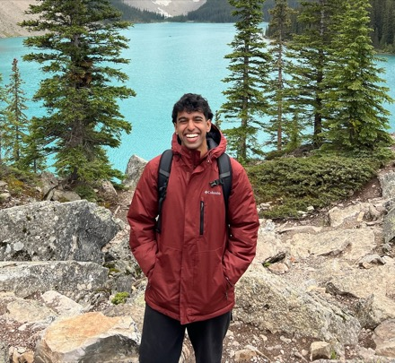

Hi! I'm a computer vision engineer with experience and interest in sensor calibration, multi-view geometry, and training perception models. I'm broadly interested in physical AI and anything 3D. I received my M.S. in Computer Vision from CMU. Before that I received my B.S. in Mechanical Engineering with a minor in Computer Science from UIUC.
I like dogs, soccer, tennis, spikeball, overly competitive card games, and hotdogs. Reach me at niviruw[at]gmail[dot]com!

Experience
I spent ~3 years as a Research Engineer at Adobe Research on the Emerging Devices Group, working on multi-camera capture systems, image relighting, and novel display technologies. Prior to that, I worked on photorealistic object insertion for HIL simulation and driver attention prediction at UIUC, physics-based generative modeling at 3M, and FEA for opthalmic microscopes at Carl Zeiss Meditec .
Projects
- Virtual Correspondences — implementation of Virtual Correspondence: Humans as a Cue for Extreme-View Geometry from CVPR 2022
- IKEA-GAFR — single-view sketch-based 3D reconstruction from IKEA assembly manuals
- ZoomShop — implementation of ZoomShop: Depth-Aware Editing of Photographic Composition
- De-Animation — implementation of Selectively De-Animating Video from SIGGRAPH 2012
- Two-View Stereo — basic depth from disparity on Middlebury 2005 stereo dataset
- Lane Detection — classical OpenCV lane detection and curvature estimation on dashcam footage
- Robotics Projects — Tower of Hanoi, forward/inverse kinematics, and vision-based pick-and-place on a UR3 arm with ROS
Publications & Patents
-
Z. Z. Wang, J. Echevarria, N. Wijayaratne, C. S. Kaplan · Graphics Interface (GI)
-
J. F. Schumacher, C. M. Race, Y. Wang, B. D. Zimmer, H. Desai, C. M. Fabbri, V. Mirjalili, K. Subramanian, N. N. Wijayaratne · U.S. Patent Application Pub. No. 2026/0212079 (3M)
-
Y. Shen, N. Wijayaratne, P. Sriram, A. Hasan, P. Du, K. Driggs-Campbell · IEEE ITSC
-
Y. Shen, N. Wijayaratne, P. Du, S. Jiang, K. Driggs-Campbell · CHI Extended Abstracts
-
Y. Shen, N. Wijayaratne, K. Driggs-Campbell · arXiv preprint